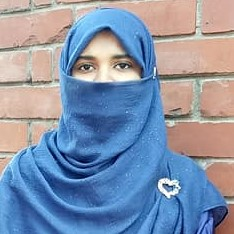

Jannat Binta Alam
Merul Badda, Dhaka-1212.
Contact No: +880-1943462808
Email Id: jannat1ruma@gmail.com
Summary:
I cherish a great desire to work with most creative and enthusiastic individuals as well as community where a strong sense of
responsibility and commitment required, that ensures dignity of work and provides potential avenues for learning and also improving
personal qualities. I have worked in various project and research paper in field of Bioinformatics, Big Data, IoT & Cloud computing.
Educational Detail:
| Institution |
Degree |
Year |
GPA |
| East West University |
BSC(CSE) |
4th year |
|
| Dhaka City College |
HSC(Science) |
2013 |
4.80 |
| Cantonment Board High School, Jahangirabad, Bogra. |
SSC(Science) |
2010 |
5.00 |
Project:
- Employee Management System using C++.
- CGPA Calculation & Distribution System using C.
- Detection and Elimination of Left Recursion using C.
- An Intelligent Approach to Find a Blood Donor using Java.
Technical Skills:
- Programming Languages
- C
- C++
- PHP
- SQL
- CSS
- Python
- HTML5
- JavaScript
- Operating Systems
- Linux (Ubuntu)
- Windows (XP, 7, 8.1, 10)
- Other Platform & Applications
- Arduino
- Origin 2016
- Microsoft Office
- Adobe Photoshop, Adobe Illustrator
- MQTT.fx, Intel XDK, Bitbucket, GitHub, GitLab, and Various IDE.
Experience & Achievements:
- "Real Time Patient Monitoring System based on Internet of Things" in 4th International Conference on Advances in Electrical Engineering (ICAEE ), 2017. (Accepted))
- "Smart Anti-theft Vehicle Tracking System for Bangladesh based on Internet of Things" in 4th International Conference on Advances in Electrical Engineering (ICAEE ), 2017. (Accepted))
- "Impact of Push down Automata on Principal Component Analysis and Independent Component for Consensus Selection from Big DNA Datasets". (Submitted)
- "Towards the Smart Water Vehicle Monitoring and Tracking System - Water Transportation Monitoring/Tracking System for Bangladesh". (Submitted)
- "Real Time Emergency Response and Reporting System based on IoT".(Submitted)
- Awarded 2nd Runner-up in 6th WUB-National ComTech Festival hosted by the Dept. of CSE of World University of Bangladesh.
Personal Detail:
| Father |
: Md. Monjurul Alam. |
| Mother |
: Mst. Nazma Islam. |
| Language |
: English, Bengali. |
| Nationality |
: Bangladeshi. |
| Marital Status |
: Unmarried. |
| Gender |
: Female. |
| Religion |
: Islam. |
| Blood Group |
: AB+. |